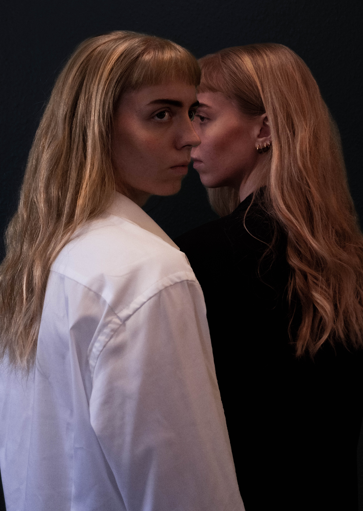

Editorial
Cut outs

For at give billeder en helt ny dimension klipper jeg objekter ud. Dette bruges til at sammenlægge flere lag og tilføje ekstra detaljer. Her ses et udklip, hvor baggrunden bliver inddraget i håret, for at gøre det mere autentisk. Det kan bruges på plakater eller på hjemmesider for at skabe blikfang.
Photoshop

Billeder som dette er produceret i programmet Photoshop. Her arbejder jeg med lag og tilføjer produkter eller personer af flere omgange. Resultatet bliver forskelligt alt efter hvilken stemning man ønsker.